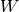
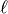
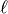
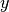
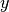

Classifying MNIST digits using Logistic Regression¶
Note
This sections assumes familiarity with the following Theano concepts: shared variables , basic arithmetic ops , T.grad , floatX. If you intend to run the code on GPU also read GPU.
Note
The code for this section is available for download here.
In this section, we show how Theano can be used to implement the most basic classifier: the logistic regression. We start off with a quick primer of the model, which serves both as a refresher but also to anchor the notation and show how mathematical expressions are mapped onto Theano graphs.
In the deepest of machine learning traditions, this tutorial will tackle the exciting problem of MNIST digit classification.
The Model¶
Logistic regression is a probabilistic, linear classifier. It is parametrized
by a weight matrix  and a bias vector  . Classification is
done by projecting data points onto a set of hyperplanes, the distance to
which reflects a class membership probability.
. Classification is
done by projecting data points onto a set of hyperplanes, the distance to
which reflects a class membership probability.
Mathematically, this can be written as:
The output of the model or prediction is then done by taking the argmax of the vector whose i’th element is P(Y=i|x).
The code to do this in Theano is the following:
# generate symbolic variables for input (x and y represent a
# minibatch)
x = T.fmatrix('x')
y = T.lvector('y')
# allocate shared variables model params
b = theano.shared(numpy.zeros((10,)), name = 'b')
W = theano.shared(numpy.zeros((784,10)), name = 'W')
# symbolic expression for computing the vector of
# class-membership probabilities
p_y_given_x = T.nnet.softmax(T.dot(x,W)+b)
# compiled Theano function that returns the vector of class-membership
# probabilities
get_p_y_given_x = theano.function( inputs = [x], outputs = p_y_given_x)
# print the probability of some example represented by x_value
# x_value is not a symbolic variable but a numpy array describing the
# datapoint
print 'Probability that x is of class %i is %f' % (i, get_p_y_given_x(x_value)[i])
# symbolic description of how to compute prediction as class whose probability
# is maximal
y_pred = T.argmax(p_y_given_x)
# compiled theano function that returns this value
classify = theano.function( inputs = [x], outputs = y_pred)
We first start by allocating symbolic variables for the inputs . Since the parameters of the model must maintain a persistent state throughout training, we allocate shared variables for . This declares them both as being symbolic Theano variables, but also initializes their contents. The dot and softmax operators are then used to compute the vector . The resulting variable p_y_given_x is a symbolic variable of vector-type.
Up to this point, we have only defined the graph of computations which Theano
should perform. To get the actual numerical value of , we
must create a function get_p_y_given_x, which takes as input x and
returns p_y_given_x. We can then index its return value with the
index  to get the membership probability of the th class.
to get the membership probability of the th class.
Now let’s finish building the Theano graph. To get the actual model prediction, we can use the T.argmax operator, which will return the index at which p_y_given_x is maximal (i.e. the class with maximum probability).
Again, to calculate the actual prediction for a given input, we construct a function classify. This function takes as argument a batch of inputs x (as a matrix), and outputs a vector containing the predicted class for each example (row) in x.
Now of course, the model we have defined so far does not do anything useful yet, since its parameters are still in their initial random state. The following section will thus cover how to learn the optimal parameters.
Note
For a complete list of Theano ops, see: list of ops
Defining a Loss Function¶
Learning optimal model parameters involves minimizing a loss function. In the
case of multi-class logistic regression, it is very common to use the negative
log-likelihood as the loss. This is equivalent to maximizing the likelihood of the
data set  under the model parameterized by
under the model parameterized by  . Let
us first start by defining the likelihood
. Let
us first start by defining the likelihood  and loss
:
and loss
:
While entire books are dedicated to the topic of minimization, gradient descent is by far the simplest method for minimizing arbitrary non-linear functions. This tutorial will use the method of stochastic gradient method with mini-batches (MSGD). See Stochastic Gradient Descent for more details.
The following Theano code defines the (symbolic) loss for a given minibatch:
loss = -T.mean(T.log(p_y_given_x)[T.arange(y.shape[0]), y])
# note on syntax: T.arange(y.shape[0]) is a vector of integers [0,1,2,...,len(y)].
# Indexing a matrix M by the two vectors [0,1,...,K], [a,b,...,k] returns the
# elements M[0,a], M[1,b], ..., M[K,k] as a vector. Here, we use this
# syntax to retrieve the log-probability of the correct labels, y.
Note
Even though the loss is formally defined as the sum, over the data set, of individual error terms, in practice, we use the mean (T.mean) in the code. This allows for the learning rate choice to be less dependent of the minibatch size.
Creating a LogisticRegression class¶
We now have all the tools we need to define a LogisticRegression class, which encapsulates the basic behaviour of logistic regression. The code is very similar to what we have covered so far, and should be self explanatory.
class LogisticRegression(object):
def __init__(self, input, n_in, n_out):
""" Initialize the parameters of the logistic regression
:type input: theano.tensor.TensorType
:param input: symbolic variable that describes the input of the
architecture (e.g., one minibatch of input images)
:type n_in: int
:param n_in: number of input units, the dimension of the space in
which the datapoint lies
:type n_out: int
:param n_out: number of output units, the dimension of the space in
which the target lies
"""
# initialize with 0 the weights W as a matrix of shape (n_in, n_out)
self.W = theano.shared( value=numpy.zeros((n_in,n_out),
dtype = theano.config.floatX), name ='W' )
# initialize the baises b as a vector of n_out 0s
self.b = theano.shared( value=numpy.zeros((n_out,),
dtype = theano.config.floatX), name = 'b' )
# compute vector of class-membership probabilities in symbolic form
self.p_y_given_x = T.nnet.softmax(T.dot(input, self.W)+self.b)
# compute prediction as class whose probability is maximal in
# symbolic form
self.y_pred=T.argmax(self.p_y_given_x, axis=1)
def negative_log_likelihood(self, y):
"""Return the mean of the negative log-likelihood of the prediction
of this model under a given target distribution.
.. math::
\frac{1}{|\mathcal{D}|} \mathcal{L} (\theta=\{W,b\}, \mathcal{D}) =
\frac{1}{|\mathcal{D}|} \sum_{i=0}^{|\mathcal{D}|} \log(P(Y=y^{(i)}|x^{(i)}, W,b)) \\
\ell (\theta=\{W,b\}, \mathcal{D})
:param y: corresponds to a vector that gives for each example the
correct label;
Note: we use the mean instead of the sum so that
the learning rate is less dependent on the batch size
"""
return -T.mean(T.log(self.p_y_given_x)[T.arange(y.shape[0]),y])
We instantiate this class as follows:
# allocate symbolic variables for the data
x = T.fmatrix() # the data is presented as rasterized images (each being a 1-D row vector in x)
y = T.lvector() # the labels are presented as 1D vector of [long int] labels
# construct the logistic regression class
classifier = LogisticRegression( \
input=x.reshape((batch_size,28*28)), n_in=28*28, n_out=10)
Note that the inputs x and y are defined outside the scope of the LogisticRegression object. Since the class requires the input x to build its graph however, it is passed as a parameter of the __init__ function. This is usefull in the case when you would want to concatenate such classes to form a deep network (case in which the input is not a new variable but the output of the layer below). While in this example we will not do that, the tutorials are designed such that the code is as similar as possible among them, making it easy to go from one tutorial to the other.
The last step involves defining a (symbolic) cost variable to minimize, using the instance method classifier.negative_log_likelihood.
cost = classifier.negative_log_likelihood(y)
Note how x is an implicit symbolic input to the symbolic definition of cost, here, because classifier.__init__ has defined its symbolic variables in terms of x.
Learning the Model¶
To implement MSGD in most programming languages (C/C++, Matlab, Python), one
would start by manually deriving the expressions for the gradient of the loss
with respect to the parameters: in this case ,
and , This can get pretty tricky for complex
models, as expressions for  can get
fairly complex, especially when taking into account problems of numerical
stability.
can get
fairly complex, especially when taking into account problems of numerical
stability.
With Theano, this work is greatly simplified as it performs automatic differentiation and applies certain math transforms to improve numerical stability.
To get the gradients and in Theano, simply do the following:
# compute the gradient of cost with respect to theta = (W,b)
g_W = T.grad(cost, classifier.W)
g_b = T.grad(cost, classifier.b)
g_W and g_b are again symbolic variables, which can be used as part of a computation graph. Performing one-step of gradient descent can then be done as follows:
# compute the gradient of cost with respect to theta = (W,b)
g_W = T.grad(cost = cost, wrt = classifier.W)
g_b = T.grad(cost = cost, wrt = classifier.b)
# specify how to update the parameters of the model as a dictionary
updates ={classifier.W: classifier.W - learning_rate*g_W,\
classifier.b: classifier.b - learning_rate*g_b}
# compiling a Theano function `train_model` that returns the cost, but in
# the same time updates the parameter of the model based on the rules
# defined in `updates`
train_model = theano.function(inputs = [index],
outputs = cost,
updates = updates,
givens={
x:train_set_x[index*batch_size:(index+1)*batch_size],
y:train_set_y[index*batch_size:(index+1)*batch_size]})
The updates dictionary contains, for each parameter, the stochastic gradient update operation. The givens dictionary indicates with what to replace certain variables of the graph. The function train_model is then defined such that:
- the input is the mini-batch index index that together with the batch
size( which is not an input since it is fixed) defines
 with
corresponding labels 
with
corresponding labels  - the return value is the cost/loss associated with the x, y defined by the index
- on every function call, it will first replace x and y with the corresponding slices from the training set as defined by the index and afterwards it will evaluate the cost associated with that minibatch and apply the operations defined by the updates dictionary.
Each time train_model(index) function is called, it will thus compute and return the appropriate cost, while also performing a step of MSGD. The entire learning algorithm thus consists in looping over all examples in the dataset, and repeatedly calling the train_model function.
Testing the model¶
As explained in Learning a Classifier, when testing the model we are interested in the number of misclassified examples (and not only in the likelihood). The LogisticRegression class therefore has an extra instance method, which builds the symbolic graph for retrieving the number of misclassified examples in each minibatch.
The code is as follows:
class LogisticRegression(object):
...
def errors(self, y):
"""Return a float representing the number of errors in the minibatch
over the total number of examples of the minibatch ; zero
one loss over the size of the minibatch
"""
return T.mean(T.neq(self.y_pred, y))
We then create a function test_model and a function validate_model, which we can call to retrieve this value. As you will see shortly, validate_model is key to our early-stopping implementation (see Early-Stopping). Both of these function will get as input a batch offset and will compute the number of missclassified examples for that mini-batch. The only difference between them is that one draws its batches from the testing set, while the other from the validation set.
# compiling a Theano function that computes the mistakes that are made by
# the model on a minibatch
test_model = theano.function(inputs = [index],
outputs = classifier.errors(y),
givens={
x:test_set_x[index*batch_size:(index+1)*batch_size],
y:test_set_y[index*batch_size:(index+1)*batch_size]})
validate_model = theano.function( inputs = [index],
outputs = classifier.errors(y),
givens={
x:valid_set_x[index*batch_size:(index+1)*batch_size],
y:valid_set_y[index*batch_size:(index+1)*batch_size]})
Putting it All Together¶
The finished product is as follows.
"""
This tutorial introduces logistic regression using Theano and stochastic
gradient descent.
Logistic regression is a probabilistic, linear classifier. It is parametrized
by a weight matrix :math:`W` and a bias vector :math:`b`. Classification is
done by projecting data points onto a set of hyperplanes, the distance to
which is used to determine a class membership probability.
Mathematically, this can be written as:
.. math::
P(Y=i|x, W,b) &= softmax_i(W x + b) \\
&= \frac {e^{W_i x + b_i}} {\sum_j e^{W_j x + b_j}}
The output of the model or prediction is then done by taking the argmax of
the vector whose i'th element is P(Y=i|x).
.. math::
y_{pred} = argmax_i P(Y=i|x,W,b)
This tutorial presents a stochastic gradient descent optimization method
suitable for large datasets, and a conjugate gradient optimization method
that is suitable for smaller datasets.
References:
- textbooks: "Pattern Recognition and Machine Learning" -
Christopher M. Bishop, section 4.3.2
"""
__docformat__ = 'restructedtext en'
import numpy, time, cPickle, gzip, sys, os
import theano
import theano.tensor as T
class LogisticRegression(object):
"""Multi-class Logistic Regression Class
The logistic regression is fully described by a weight matrix :math:`W`
and bias vector :math:`b`. Classification is done by projecting data
points onto a set of hyperplanes, the distance to which is used to
determine a class membership probability.
"""
def __init__(self, input, n_in, n_out):
""" Initialize the parameters of the logistic regression
:type input: theano.tensor.TensorType
:param input: symbolic variable that describes the input of the
architecture (one minibatch)
:type n_in: int
:param n_in: number of input units, the dimension of the space in
which the datapoints lie
:type n_out: int
:param n_out: number of output units, the dimension of the space in
which the labels lie
"""
# initialize with 0 the weights W as a matrix of shape (n_in, n_out)
self.W = theano.shared(value=numpy.zeros((n_in,n_out), dtype = theano.config.floatX),
name='W')
# initialize the baises b as a vector of n_out 0s
self.b = theano.shared(value=numpy.zeros((n_out,), dtype = theano.config.floatX),
name='b')
# compute vector of class-membership probabilities in symbolic form
self.p_y_given_x = T.nnet.softmax(T.dot(input, self.W)+self.b)
# compute prediction as class whose probability is maximal in
# symbolic form
self.y_pred=T.argmax(self.p_y_given_x, axis=1)
# parameters of the model
self.params = [self.W, self.b]
def negative_log_likelihood(self, y):
"""Return the mean of the negative log-likelihood of the prediction
of this model under a given target distribution.
.. math::
\frac{1}{|\mathcal{D}|} \mathcal{L} (\theta=\{W,b\}, \mathcal{D}) =
\frac{1}{|\mathcal{D}|} \sum_{i=0}^{|\mathcal{D}|} \log(P(Y=y^{(i)}|x^{(i)}, W,b)) \\
\ell (\theta=\{W,b\}, \mathcal{D})
:type y: theano.tensor.TensorType
:param y: corresponds to a vector that gives for each example the
correct label
Note: we use the mean instead of the sum so that
the learning rate is less dependent on the batch size
"""
# y.shape[0] is (symbolically) the number of rows in y, i.e., number of examples (call it n) in the minibatch
# T.arange(y.shape[0]) is a symbolic vector which will contain [0,1,2,... n-1]
# T.log(self.p_y_given_x) is a matrix of Log-Probabilities (call it LP) with one row per example and one column per class
# LP[T.arange(y.shape[0]),y] is a vector v containing [LP[0,y[0]], LP[1,y[1]], LP[2,y[2]], ..., LP[n-1,y[n-1]]]
# and T.mean(LP[T.arange(y.shape[0]),y]) is the mean (across minibatch examples) of the elements in v,
# i.e., the mean log-likelihood across the minibatch.
return -T.mean(T.log(self.p_y_given_x)[T.arange(y.shape[0]),y])
def errors(self, y):
"""Return a float representing the number of errors in the minibatch
over the total number of examples of the minibatch ; zero one
loss over the size of the minibatch
:type y: theano.tensor.TensorType
:param y: corresponds to a vector that gives for each example the
correct label
"""
# check if y has same dimension of y_pred
if y.ndim != self.y_pred.ndim:
raise TypeError('y should have the same shape as self.y_pred',
('y', target.type, 'y_pred', self.y_pred.type))
# check if y is of the correct datatype
if y.dtype.startswith('int'):
# the T.neq operator returns a vector of 0s and 1s, where 1
# represents a mistake in prediction
return T.mean(T.neq(self.y_pred, y))
else:
raise NotImplementedError()
def load_data(dataset):
''' Loads the dataset
:type dataset: string
:param dataset: the path to the dataset (here MNIST)
'''
#############
# LOAD DATA #
#############
# Download the MNIST dataset if it is not present
data_dir, data_file = os.path.split(dataset)
if (not os.path.isfile(dataset)) and data_file == 'mnist.pkl.gz':
import urllib
origin = 'http://www.iro.umontreal.ca/~lisa/deep/data/mnist/mnist.pkl.gz'
print 'Downloading data from %s' % origin
urllib.urlretrieve(origin, dataset)
print '... loading data'
# Load the dataset
f = gzip.open(dataset,'rb')
train_set, valid_set, test_set = cPickle.load(f)
f.close()
def shared_dataset(data_xy):
""" Function that loads the dataset into shared variables
The reason we store our dataset in shared variables is to allow
Theano to copy it into the GPU memory (when code is run on GPU).
Since copying data into the GPU is slow, copying a minibatch everytime
is needed (the default behaviour if the data is not in a shared
variable) would lead to a large decrease in performance.
"""
data_x, data_y = data_xy
shared_x = theano.shared(numpy.asarray(data_x, dtype=theano.config.floatX))
shared_y = theano.shared(numpy.asarray(data_y, dtype=theano.config.floatX))
# When storing data on the GPU it has to be stored as floats
# therefore we will store the labels as ``floatX`` as well
# (``shared_y`` does exactly that). But during our computations
# we need them as ints (we use labels as index, and if they are
# floats it doesn't make sense) therefore instead of returning
# ``shared_y`` we will have to cast it to int. This little hack
# lets ous get around this issue
return shared_x, T.cast(shared_y, 'int32')
test_set_x, test_set_y = shared_dataset(test_set)
valid_set_x, valid_set_y = shared_dataset(valid_set)
train_set_x, train_set_y = shared_dataset(train_set)
rval = [(train_set_x, train_set_y), (valid_set_x,valid_set_y), (test_set_x, test_set_y)]
return rval
def sgd_optimization_mnist(learning_rate=0.13, n_epochs=1000, dataset='../data/mnist.pkl.gz',
batch_size = 600):
"""
Demonstrate stochastic gradient descent optimization of a log-linear
model
This is demonstrated on MNIST.
:type learning_rate: float
:param learning_rate: learning rate used (factor for the stochastic
gradient)
:type n_epochs: int
:param n_epochs: maximal number of epochs to run the optimizer
:type dataset: string
:param dataset: the path of the MNIST dataset file from
http://www.iro.umontreal.ca/~lisa/deep/data/mnist/mnist.pkl.gz
"""
datasets = load_data(dataset)
train_set_x, train_set_y = datasets[0]
valid_set_x, valid_set_y = datasets[1]
test_set_x , test_set_y = datasets[2]
# compute number of minibatches for training, validation and testing
n_train_batches = train_set_x.get_value(borrow=True).shape[0] / batch_size
n_valid_batches = valid_set_x.get_value(borrow=True).shape[0] / batch_size
n_test_batches = test_set_x.get_value(borrow=True).shape[0] / batch_size
######################
# BUILD ACTUAL MODEL #
######################
print '... building the model'
# allocate symbolic variables for the data
index = T.lscalar() # index to a [mini]batch
x = T.matrix('x') # the data is presented as rasterized images
y = T.ivector('y') # the labels are presented as 1D vector of
# [int] labels
# construct the logistic regression class
# Each MNIST image has size 28*28
classifier = LogisticRegression( input=x, n_in=28*28, n_out=10)
# the cost we minimize during training is the negative log likelihood of
# the model in symbolic format
cost = classifier.negative_log_likelihood(y)
# compiling a Theano function that computes the mistakes that are made by
# the model on a minibatch
test_model = theano.function(inputs = [index],
outputs = classifier.errors(y),
givens={
x:test_set_x[index*batch_size:(index+1)*batch_size],
y:test_set_y[index*batch_size:(index+1)*batch_size]})
validate_model = theano.function( inputs = [index],
outputs = classifier.errors(y),
givens={
x:valid_set_x[index*batch_size:(index+1)*batch_size],
y:valid_set_y[index*batch_size:(index+1)*batch_size]})
# compute the gradient of cost with respect to theta = (W,b)
g_W = T.grad(cost = cost, wrt = classifier.W)
g_b = T.grad(cost = cost, wrt = classifier.b)
# specify how to update the parameters of the model as a dictionary
updates ={classifier.W: classifier.W - learning_rate*g_W,\
classifier.b: classifier.b - learning_rate*g_b}
# compiling a Theano function `train_model` that returns the cost, but in
# the same time updates the parameter of the model based on the rules
# defined in `updates`
train_model = theano.function(inputs = [index],
outputs = cost,
updates = updates,
givens={
x:train_set_x[index*batch_size:(index+1)*batch_size],
y:train_set_y[index*batch_size:(index+1)*batch_size]})
###############
# TRAIN MODEL #
###############
print '... training the model'
# early-stopping parameters
patience = 5000 # look as this many examples regardless
patience_increase = 2 # wait this much longer when a new best is
# found
improvement_threshold = 0.995 # a relative improvement of this much is
# considered significant
validation_frequency = min(n_train_batches, patience/2)
# go through this many
# minibatche before checking the network
# on the validation set; in this case we
# check every epoch
best_params = None
best_validation_loss = numpy.inf
test_score = 0.
start_time = time.clock()
done_looping = False
epoch = 0
while (epoch < n_epochs) and (not done_looping):
epoch = epoch + 1
for minibatch_index in xrange(n_train_batches):
minibatch_avg_cost = train_model(minibatch_index)
# iteration number
iter = epoch * n_train_batches + minibatch_index
if (iter+1) % validation_frequency == 0:
# compute zero-one loss on validation set
validation_losses = [validate_model(i) for i in xrange(n_valid_batches)]
this_validation_loss = numpy.mean(validation_losses)
print('epoch %i, minibatch %i/%i, validation error %f %%' % \
(epoch, minibatch_index+1,n_train_batches, \
this_validation_loss*100.))
# if we got the best validation score until now
if this_validation_loss < best_validation_loss:
#improve patience if loss improvement is good enough
if this_validation_loss < best_validation_loss * \
improvement_threshold :
patience = max(patience, iter * patience_increase)
best_validation_loss = this_validation_loss
# test it on the test set
test_losses = [test_model(i) for i in xrange(n_test_batches)]
test_score = numpy.mean(test_losses)
print((' epoch %i, minibatch %i/%i, test error of best '
'model %f %%') % \
(epoch, minibatch_index+1, n_train_batches,test_score*100.))
if patience <= iter :
done_looping = True
break
end_time = time.clock()
print(('Optimization complete with best validation score of %f %%,'
'with test performance %f %%') %
(best_validation_loss * 100., test_score*100.))
print 'The code run for %d epochs, with %f epochs/sec'%(epoch,1.*epoch/(end_time-start_time))
print >> sys.stderr, ('The code for file '+os.path.split(__file__)[1]+' ran for %.1fs' % ((end_time-start_time)))
if __name__ == '__main__':
sgd_optimization_mnist()
The user can learn to classify MNIST digits with SGD logistic regression, by typing, from within the DeepLearningTutorials folder:
python code/logistic_sgd.py
The output one should expect is of the form :
...
epoch 73, minibatch 83/83, validation error 7.500000 %
epoch 73, minibatch 83/83, test error of best model 7.489583 %
epoch 74, minibatch 83/83, validation error 7.479167 %
epoch 74, minibatch 83/83, test error of best model 7.489583 %
Optimization complete with best validation score of 7.479167 %,with test performance 7.489583 %
The code run for 75 epochs, with 1.936983 epochs/sec
On an Intel(R) Core(TM)2 Duo CPU E8400 @ 3.00 Ghz the code runs with approximately 1.936 epochs/sec and it took 75 epochs to reach a test error of 7.489%. On the GPU the code does almost 10.0 epochs/sec. For this instance we used a batch size of 600.
Footnotes
| [1] | For smaller datasets and simpler models, more sophisticated descent algorithms can be more effective. The sample code logistic_cg.py demonstrates how to use SciPy’s conjugate gradient solver with Theano on the logistic regression task. |